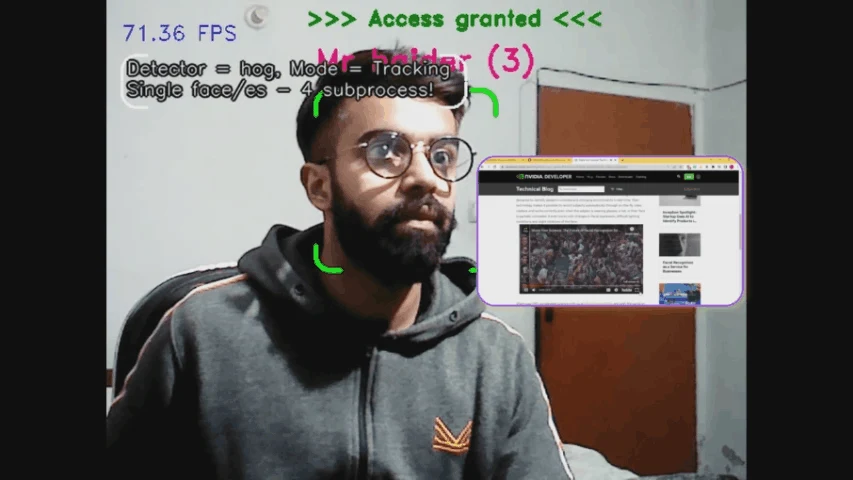

ACTUAL PROJECT OUTPUTActual project output.
The problem
A live-camera application needs to recognize authorized people while keeping video processing and application feedback responsive.
My contribution
I developed and taught the face detection, alignment, recognition, tracking, and access-logic workflow as a public OpenCV project.
What I delivered
- Continuous camera acquisition with face detection and tracking.
- Face alignment and embedding/distance-based recognition logic.
- Authorized-access decisions and responsive user feedback in an application workflow.
Engineering decisions
- Connect recognition and tracking so the workflow can use identity over time.
- Use multiprocessing alongside tracking for continuous frame processing.
- Make the complete workflow understandable and reproducible through source code and teaching materials.
Outcome & scope
A completed public application and teaching project demonstrating live-video recognition and interactive CV.
This is a public teaching application, not a certified physical access-control product. No security certification or measured latency is claimed.
Skills strengthened
Building and teaching the application strengthened both my real-time CV integration skills and my ability to explain an engineering workflow clearly.